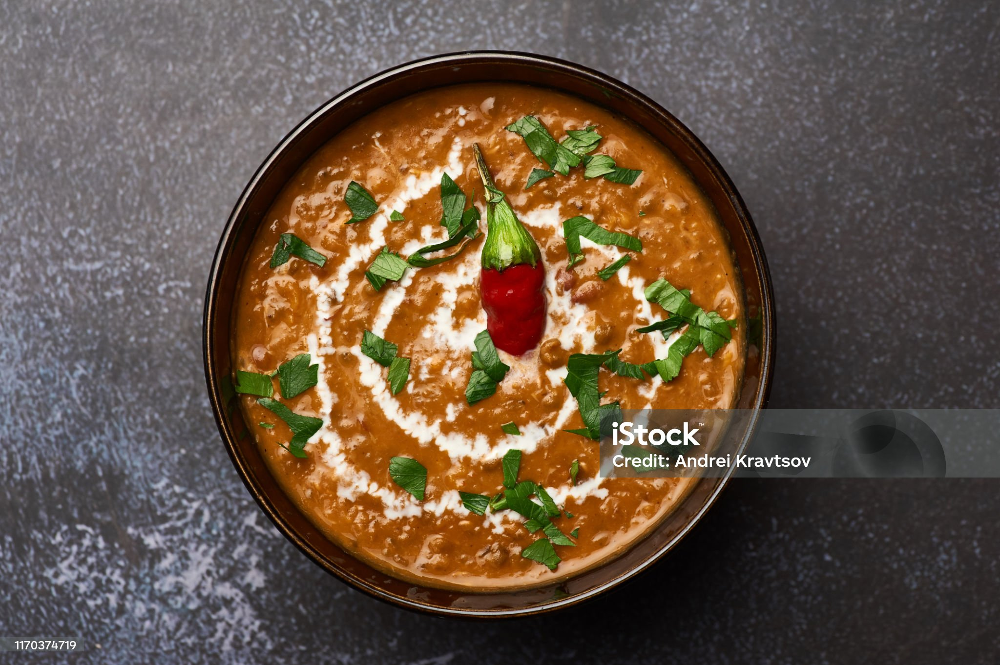

Rajma Curry Recipe
Ingredients :
<- 1 cup Red Kidney Beans (Rajma), soaked overnight
- 2 medium Onions, finely chopped
- 3 medium Tomatoes, pureed
- 1 tablespoon Ginger-Garlic Paste
- 2 Green Chilies, chopped
- 1 teaspoon Cumin Seeds
- 1 Bay Leaf
- 1 inch Cinnamon Stick
- 2-3 Cloves
- 1/2 teaspoon Turmeric Powder
- 1 teaspoon Red Chili Powder
- 1 teaspoon Coriander Powder
- 1 teaspoon Garam Masala
- 1/2 teaspoon Cumin Powder
- Salt, to taste
- 3 tablespoons Oil or Ghee
- Fresh Coriander Leaves, for garnish
- Water, as needed
Preparation Process :
- Rajma: Pressure cook the soaked rajma with water and
a pinch of salt until soft (about 4-5 whistles). Set aside.
- Prepare Masala: Heat oil or ghee in a pan.
Add cumin seeds, bay leaf, cinnamon stick, and cloves.
Sauté for a few seconds. Add finely chopped onions and sauté until golden brown.
Add ginger-garlic paste and green chilies.
Sauté for a minute until the raw smell disappears.
- Add Tomatoes and Spices: Add tomato puree and cook until the oil separates from the mixture.
Add turmeric powder, red chili powder, coriander powder, and cumin powder.
Mix well and cook for 2-3 minutes.
- Combine Rajma and Masala: Add the cooked rajma along with its water to the masala.
Mix well. Add additional water as needed to achieve the desired consistency.
Simmer for 15-20 minutes, stirring occasionally.
- Finish and Garnish: Add garam masala and adjust salt.
Garnish with fresh coriander leaves.
- Serve: Serve hot with rice or roti.
